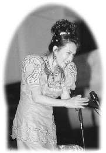

| La tournée de conférences de Maître au Moyen-Orient et en Afrique du Sud |
 Plusieurs jours avant la conférence de Maître dans la ville du Cap, des affiches ont été placées partout au centre ville et l'amour de Maître enveloppait cette belle cité. Les milliers de gens de différents milieux culturels ou religieux venant pour la conférence ont apprécié cet autre plaisir que de regarder une magnifique collection de dessins artistiques de Maître dans le hall d'entrée. Nombreux ont exprimé leur stupéfaction devant les divers talents créatifs de Maître. Dès qu'ils ont vu les revues gratuites, certains ont demandé directement le bureau pour s'inscrire à l'initiation. On pouvait clairement percevoir leur coeur ardent et leur esprit pur.
Quand Maître est arrivée dans le hall, une petite africaine s'est précipitée pour Lui donner un baiser en signe d'accueil. Quand Maître a ouvert aussitôt les bras et l'a embrassée avec beaucoup d'amour, le visage de l'enfant rayonnait d'amour et d'émerveillement. Dans une longue robe orangée brillante, rehaussée de broderies vertes faisant penser à une princesse charmante, Maître est entrée royalement dans le hall. Un membre du Centre Bouddhiste Tibétain de la ville lui a offert un "hada" blanc, vêtement symbolisant un "nuage blanc", ce qui est la forme d'accueil la plus chaleureuse chez les Tibétains, pendant que d'autres dans la salle offraient des fleurs de bienvenue.
Maître a commencé Sa conférence en disant : " Nous avons préparé toute chose pour cette vie, tel que mettre de l'argent en banque pour les urgences, la retraite, les funérailles, etc. mais tout le monde ne s'est pas préparé pour le dernier départ. Les gens sont effrayés à ce moment-là parce qu'ils ne s'y sont pas préparés. Pour ceux qui ne veulent pas revenir après cette existence, il y a un moyen d'exercer notre esprit parce que nous sommes l'essence de Dieu et que nous avons Dieu en nous. Nous sommes séparés de Dieu à cause de nos propres pensées. Pour nous souvenir de cela, nous devons nous entraîner à savoir que nous sommes Dieu. Donc, nous avons besoin de pratiquer, non seulement pour nous souvenir de notre pouvoir, mais aussi pour apprécier la vie pendant que nous sommes vivants et pour améliorer notre vie et celles des autres. Nous devons faire des méditations profondes, de la bonne manière, alors au moment de partir, si nous espérons aller au ciel, nous irons. Nous pouvons échapper à l'enfer si nous sommes les fils et filles de Dieu. Pour nous préparer à une grande récompense, nous devons apprendre à créer notre propre ciel. Ceci n'est pas facile à cause de nos habitudes, mais les habitudes peuvent changer avec le temps. "
Concernant la capacité de Dieu a pardonné, Maître a dit: " Il n'y a jamais de vengeance pour Dieu. Le pardon reçu de Dieu est infiniment plus important que le pardon des parents aux enfants. Dieu peut toujours réparer toutes le erreurs que nous avons commises dans nos vies. "
Ensuite, Maître a parlé des pensées négatives et leurs effets : " Si nous continuons à penser négativement sans connexion positive avec le pouvoir de Dieu par la méditation, nous nous retrouverons dans des endroits désagréables, et c'est ce que nous appelons "l'enfer". La plupart de temps, nous ne sommes pas assez fort, ainsi nous restons dans ses endroits négatifs. Parfois même, ce n'est pas seulement créé par les peurs et les conséquences d'une seule personne, mais, c'est la collection de tels effets de groupe qui nous plonge dans ce monde d'illusion et de souffrance. Pourtant, cela ne devrait pas être ainsi. " Elle a ajouté que la seule pensée qui doit nous animer est : " Dieu est miséricordieux. "
Maître a invité chacun à devenir son propre Maître: " Chacun de nous devrait apprendre l'art de devenir le Maître de son destin et créer son propre futur. Ne laissons pas le karma des autres nous conduire comme des esclaves. Nous devons agir comme Dieu, penser comme Dieu. "
Á la fin de Son exposé, Maître a révélé qu'une âme peut recevoir l'illumination durant la conférence. Elle a demandé à l'audience ceux d'entre eux qui avaient déjà vue la lumière divine, et plusieurs personnes (non initiées) ont levé la main. Pendant qu'Elle répondait aux questions, Maître a fait cette remarque : " Si ce monde physique était tout, alors vous croiriez que Dieu est négligeant. Dans le chemin spirituel, tout est bien et parfait. Nous sommes responsables de tous les désastres qui nous affectent. Même les arbres abattus affectent le climat et nos récoltes. Les essaies de bombes, ça et là, créent d'innommables désastres. " Maître a expliqué aussi qu'il n'existe qu'une seule religion et par conséquent, les personnes de différentes compréhensions de croyances n'ont réellement pas besoin de lutter entre elles.
Après la conférence, de nombreuses personnes ont été initiées à la Méthode Guan Yin ou ont appris la Méthode pratique. Maître a enseigné aussi à l'audience une courte méditation dans le but de leur donner un avant goût de "l'extase divin." Une mère a fermé les yeux et a médité en tenant calmement son bébé dans ses bras. Deux femmes qui pratiquaient déjà la spiritualité ont dit à nos amis initiés qu'elles se sont senties très bien en présence de Maître Ching Hai, elles L'ont louée en tant que "le principe de la divinité Féminine."